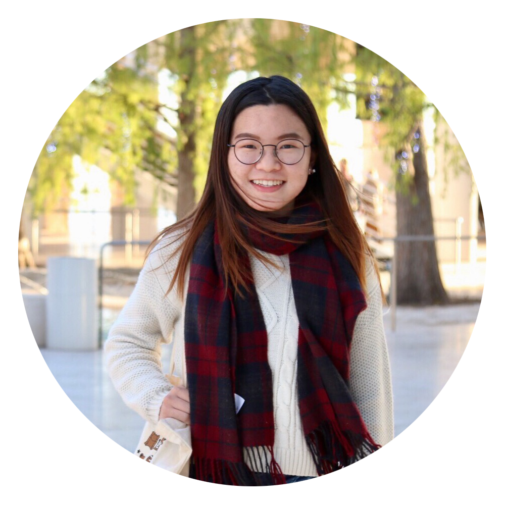

Date of Birth: 8 March, 1999
Hometown: Shenzhen, China
Education: UC Berkeley, Class of 2021
High School: Shenzhen Middle School, Class of 2017
Interested Majors: Psychology, Education, Biology
Skills: Graphic Design, Event Planning, Photography, Teaching

Health Educator | Peer Health Exchange, Oct 2017 to Present
@Berkeley, California, United States
Join Peer Health Exchange (PHE) as a health educator and currently work with two other co-educators to offer students at KIPP King Collegiate High School weekly health-related workshops. Have been trained to teach students necessary knowledge on mental health, sexual health and substance use.
Photographer | Spoon University at Berkeley, Oct 2017 to Present
@Berkeley, California, United States
Take and edit photos for recipes, local restaurants' food or food-related stories for the branch of Spoon University, a food publication, at Berkeley. Also recording club activities like cooking challenge through photography.
Director of Public Relations | Student Activities Association, Oct 2014 to Jun 2016
@Shenzhen, Guangdong, China
Helped prepare annual New Year fair with about 50K visitors and on-campus singers contest with 100+ contestants. Led the PR group that taking charge of fundraising, sponsorship, publicizing activities and dealing with public opinions.
Internship in Psychology Department | Shenzhen Children’s Hospital, Aug 2016
@Shenzhen, Guangdong, China
Assisted out-patient consultation with leading doctor in psychology department
Shadowed 80 psychological or neurodevelopment cases. Observed multiple psychology tests including tests on IQ and autism.
Graphic designer and editor of this personal blog aiming to exhibit photos, life stories and profiles of me and my boyfriend. Design the layout, logo and main elements through Adobe Illustrator and Photoshop. Also in charge of brainstorming content and publicizing website through multiple social medias.
“Correlation between Background Music and Task Performance” | July 2017
Instructed by Dr. Monica Lopez- Gonzalez from Johns Hopkins University, this paper discusses 3 studies on the correlation between background music and task performance with different foci and hypothesis.
Photography (6+ years):
Photography is definitely the most significant hobby for me and moments with camera are so precious for me. I take photos for food, portrait as well as nature. I love to share the photos I’ve taken (with my boyfriend) and you can check them on our personal blog ohmyca.com.
Tennis:
I’ve practiced for several years but sadly I’m still quite bad at it:(
Mystery/whodunit novels and films:
I started this journey by the Manga “Case Closed” (or “Detective Conan”) when I was about 5 years old. I really enjoyed Japanese novels and my favorite authors are Keigo Higashino and Soji Shimada. I also watched a lot of mystery movies such as those directed by Alfred Hitchcock.
Foodie:
Yes I really love food and am a huge fan of Szechuan-Style hotpot and Boba. But more than just eating, I sometimes attempt to cook those food by myself and so far am quite successful (lol).
JJ Lin:
I love every of JJ’s works and you should definitely listen to his songs! He is AMAZING:)